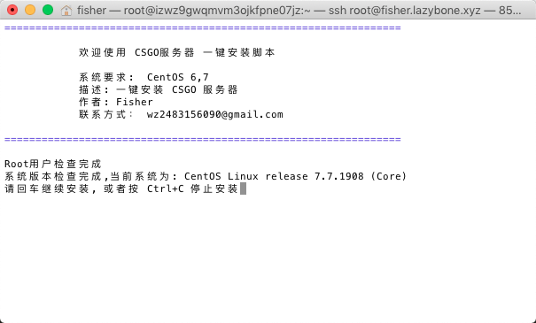
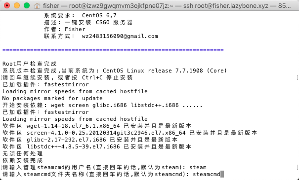
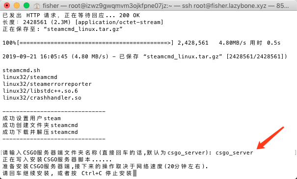
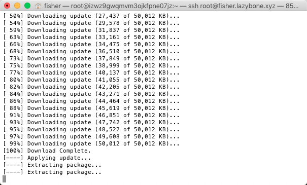
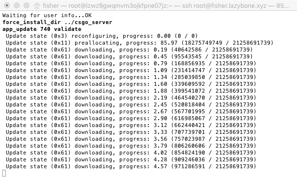
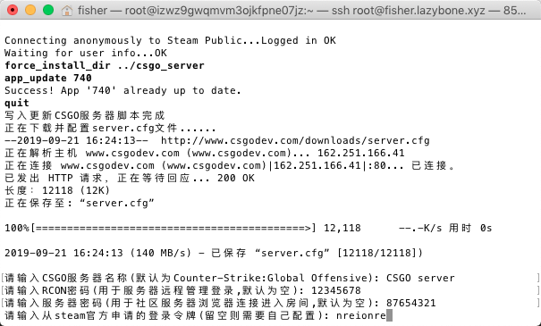
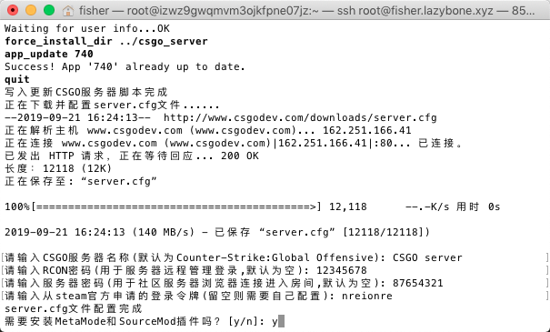
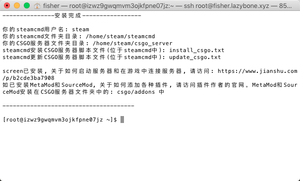
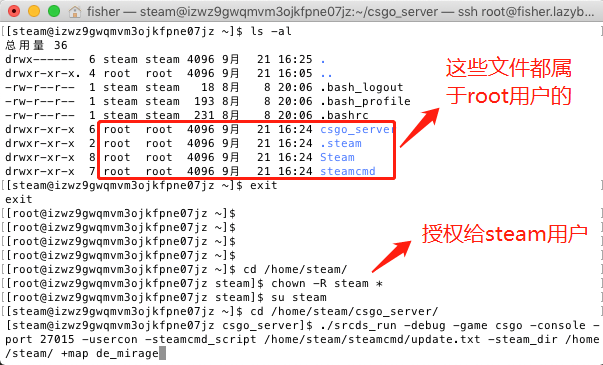
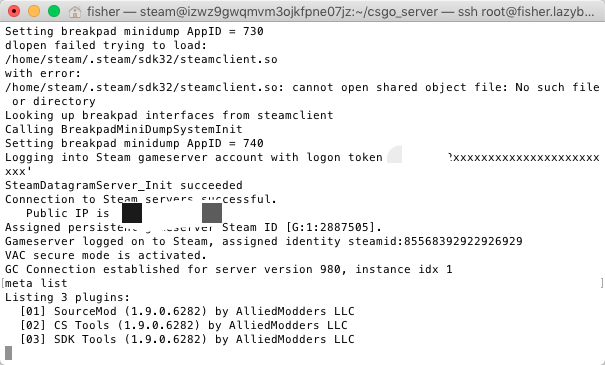

前言
这篇文章首发于Fisher的简书
在我意识到shell编程的重要性之后，我便开始想着学习shell，但是拿什么练手呢？我想到了CSGO服务器的搭建，于是这个一键安装CSGO服务器的脚本就诞生了
前期的准备
首先我们需要获取steam服务器的登录令牌。没有该令牌的服务器只能在本地网络中进行连接，在社区服务器浏览器中也不会显示
在之前基于Centos7.X的CS:GO私人服务器搭建中的“三.配置并运行CS:GO服务端”里面已经有关于如何获取steam服务器登录令牌的教程，这里就不多做说明了
开放云服务器的UDP 27015端口
在之前的搭建教程中的“三. 配置并运行CS:GO服务端”已有相关的教程，这里也不多说了
获取一键安装脚本
使用wget下载csgo.sh文件
1 | wget --no-check-certificate https://github.com/FisherWY/Shell/releases/download/0.2/csgo.sh |
如果没有安装wget，执行以下命令：1
sudo yum install wget
运行csgo.sh注意事项
为csgo.sh添加可运行权限：1
chmod +x csgo.sh
运行脚本：1
./csgo.sh
安装过程以及注意事项
脚本会自动检查是否用户是否为root，以及系统版本是否兼容。如果没有root，请切换用户

输入管理steamcmd的用户名称和steamcmd文件夹名称，如不想修改直接回车就行

输入CSGO服务器端文件夹名称，如不想修改直接回车

回车开始安装CSGO服务器，这需要一段时间。这速度取决于网速，我的是20分钟左右


设置CSGO服务器参数，需要设置的是：CSGO服务器名称，RCON密码，房间密码，steam登录令牌。如果不填留空，这些稍后都可以自行配置

安装MetaMod和SourceMod插件，如果需要安装插件的话输入”y”，不需要的话”n”即可

安装完成，输出安装信息，需要的可以记下来

授权新安装的文件给新用户。由于CSGO服务器的所有文件都属于root，在切换用户后运行服务器会提示权限不足。因此我们需要把新的文件授权给新用户
先切换到新用户的根目录下，我的新用户是”steam”，因此根目录是”/home/steam/“1
2cd /home/steam/
chown -R steam:steam *

screen打开新窗口，切换到steam用户，启动服务器
1 | screen -S csgo |
在看到如下图的提示后，即可关闭窗口，在游戏中连接服务器了

更多信息
- 关于如何更新CSGO服务器，steamcmd中已有一键脚本，直接执行即可
1 | cd /home/steam/steamcmd/ |
- 关于如何使用创意工坊地图，在之前基于Centos7.X的CS:GO私人服务器搭建中的
“五. 使用社区地图”已有相关教程，这里就不多说了